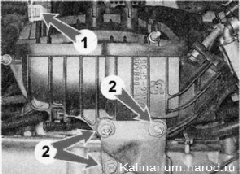
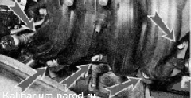
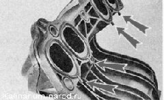

Ресивер двигателя 1,6 - снятие, замена уплотнений и установкаСнятие 1. Снимаем дроссельный узел со шпилек фланца ресивера, не отсоединяя от него шланги системы охлаждения. 2. Ослабив затяжку хомута 1, снимаем с патрубка ресивера шланг вакуумного усилителя тормозов. Торцовым ключом на 10 мм отворачиваем три гайки 2 крепления кронштейна троса привода дроссельной заслонки.  3. Отсоединяем наконечник троса от сектора дроссельной заслонки и отводим тpoc привода дроссельной заслонки вместе с кронштейном в сторону. 4. Торцовым ключом на 13 мм отворачиваем пять гаек крепления ресивера к впускному трубопроводу. 
5. Снимаем ресивер с двигателя. 6. Извлекаем из канавок фланца ресивера резиновые уплотнительные кольца. Поврежденные кольца заменяем. 
Установка Устанавливаем ресивер в обрат ной последовательности. |